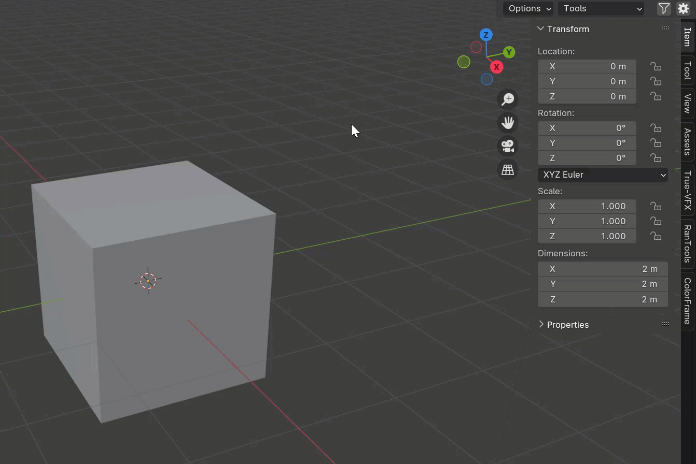
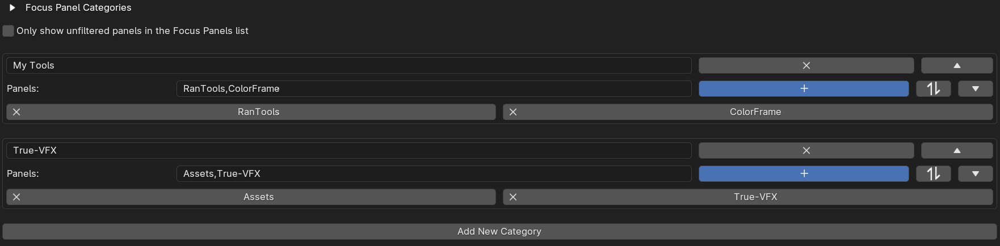
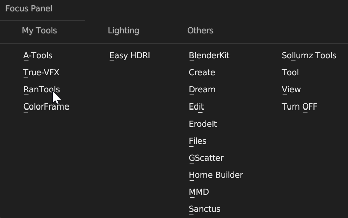
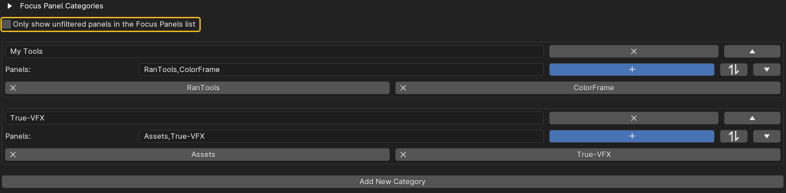

Focus Panels
The Focus Panel stands out as one of Clean Panel’s most beloved features, allowing you to open any tab in the N-Panel through a popup list, eliminating the need to navigate the rotated text in the N-Panel.
Using Focus Panel
You don’t need to set anything up to start using the Focus Panel. Simply press the shortcut key (default: ALT+J), and a list with all your tabs will appear. Choose the tab you want to view in the N-Panel. If it’s your first time opening a tab from the Focus Panel, you’ll need to manually select the ‘Focused’ tab in the N-Panel, as explained in the How It Works section below. Once ‘Focused’ is your active tab, you can open any other tab using the Focus Panel list.

Focus Panel Categories
If you have too many tabs, making it challenging to find what you’re looking for even from the Focus Panel list, you can organize them into categories.
Creating categories follows a process similar to what’s explained in the N-Panel filtering section. 
Once you have the categories set up, your Focus Panel list will be organized based on these categories. 
Show Only Unfiltered Panels in the Focus Panel List
By default, the Focus Panel list shows all available tabs. If you want the Focus Panel list to synchronize with the N-Panel Filtering and only display tabs available in the selected Filter Category (visible in the N-Panel), you can enable this option.

How It Works?
While you might expect it to be straightforward, Blender’s API doesn’t allow changing the active tab via scripting. So, how does Clean Panels achieve this? Instead of directly switching the active tab, Clean Panels adds a new custom tab called ‘Focused’ and, with some code magic, dynamically changes its content based on the tab selected from the list. This is why you need to manually select the ‘Focused’ tab first before using the Focus Panel list.